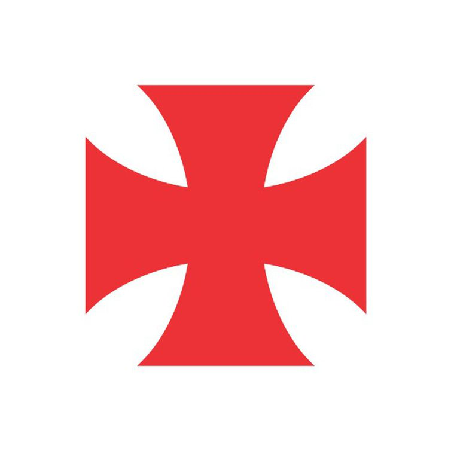

Club de Regatas Vasco da Gama(mais conhecido apenas por Vasco e cujo acrônimo é CRVG) é uma entidade sócio-poliesportiva brasileira com sede na cidade do Rio de Janeiro, fundada em 21 de agosto de 1898 por um grupo de remadores. Inspirados nas celebrações do quarto centenário da descoberta do caminho marítimo para as Índias, ocorrida em 1498, batizaram a nova agremiação com o nome do navegador português que alcançou tal feito, Vasco da Gama.
